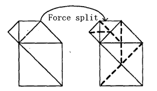

Welcome To 751 Eye-Gaze Analysis Testings
Please read the following article, trying to remember as much from it as you can.
Feel free to ask the facilitators, Jason or Bridget if you have any queries
NB the following is a portion of the paper A Review of Real-Time Terrain Rendering Techniquesall credit for the content belongs solely to authors - Ming Fan, Min Tang and Jinxiang Dong from Zhejiang University
The paper is published on ieee at http://ieeexplore.ieee.org/xpl/freeabs_all.jsp?arnumber=1349112
Real-Time Terrain Rendering
2.1. Simplifications
In polygon models, the selected sample points are used to generate meshes to approximate the surfaces of terrains. There are mainly two kinds of polygon models. One is the TIN (Triangular Irregular Network) model, and the other is the regular (or semi-regular) mesh model with subdivision connectivity. Comparatively, regular mesh models are more compact and easier to be created. When building finer resolution level, the elevations of inserted points can be got from data files directly without much additional computation, A TIN model can present a region with comparatively few triangles, however, it is harder to be created and managed. What’s more, every time the resolution level is changed, the whole model needs to be re-created. Its texture mapping is also more complex. Sometimes distortions of textures occur at certain areas.
When terrain is small, or flat at most regions, or need fewer view frustum culling, TIN models may be more efficient to be handled. When rendering large terrain, regular mesh models are better. Sometimes with the assistance of TINs, regular meshes will be more efficient to represent a terrain surface [ 1). In this paper, we mainly focus on rendering of large terrains, so TINs and corresponding algorithms are ignored. The rendering time grows with the number of triangles sent to the rendering pipeline. Visibility culling and LODs are good ways to decimating the number of vertices of meshes.
2.1.1. Levels of Detail (LODs)
When talking about terrain rendering, we can never neglect LODs. LODs are now widely used in large-scale database rendering. LODs can decimate polygons thus reducing complexity of computation without affecting the quality of scenes. There are two schemes to choose proper LODs. One is based on the flatness of terrain surface. Large and coarse meshes are used at flat regions, while high-resolution meshes at fluctuant regions. The other is based on the distance away from the camera. Regions near to the camera are displayed in higher resolutions.
During pre-processing, terrains are represented as multi-resolution meshes, which can be generated from bottom to top (or refined-to-coarse, in which a full resolution model is created at first. Then triangles are merged recursively until a screen space error tolerance is exceeded), or from top to bottom, (or coarse-to-refined, which generates a coarsest-grained model at first, then refines it). The computation complexity depends on the vertex number in the original mesh model. So the latter is much simpler.
The multi-resolution representation are arranged in one or more quad-trees (or its equivalent, triangle bintrees), or represented as wavelets. At run time, proper levels are selected.
Discrete LOD
Because a terrain height map is always ,very large, it is divided into several patches with certain size (usually (2”n+l) * (2“m+l)). A patch is also called a tile. In order to avoid gaps in the terrain, every tile has to share vertices with neighboring tiles in all directions. In Discrete LOD, the LOD model of every tile is modeled separately. The mesh models of all titles make up into the whole scene.
With the support of graphics hardware, discrete LOD can be implemented very quickly. However, the method has some disadvantages. One of them is that noticeable visual changes may appear at the boundary of different levels, and when the levels changing, vertex ‘popping’ also may be seen. Here, Popping is a sudden visual change of the surface when the geometry information is changed. To avoid them, the both levels of model are rendered, and the result images are blended. But the blending may result in the occurrence of undefined image items. Sometimes at the boundary of two levels, T- junctions or cracks occur. When a crack appears, developers often force it to a T-junction or draw a little triangle to fill it.
Figure 1. A chain of forced splitting
Duchaineau proposed an algorithm named ROAM [2]. In his method, a triangle bintree is used to manage triangles and their relationships. According to pre- calculated bounded errors, a triangular model is created and modified dynamically using a greedy subdivision algorithm. Splitting or merging of a triangle will cause a chain of splits or merges of its neighbors (as shown in Figure 1). So T-junctions and cracks are avoided automalically and continuity of meshes is guaranteed. All meshes to be split or merged are stored in two priority queues, a split queue and a merge queue, separately. ROAM optimizes flexible view-dependent error metrics and produces guaranteed bounds, and used thi, =m to compute the priorities of splitting and merging queues. When high frame-rates are needed, ROAM takes advantage of frame coherence to avoid ‘poppings’. However, the arrangement of two queues is complex, and the robustness is difficult to guarantee. Moreover, although ROAM is good at reducing polygons count, it is actualby slower than other algorithrns supported by today‘s hardware.
On the base of ROAM, Hakl improved a diamond algorithm [3]. In this method, triangles are arranged by a quad-tree, which is the equivalent of bin-tree, and 4 LIFO queues: are used to manage meshes to be split or merged. The method reduces amount of splitting and merging in some degree, and is easier to be implemented than ROAM